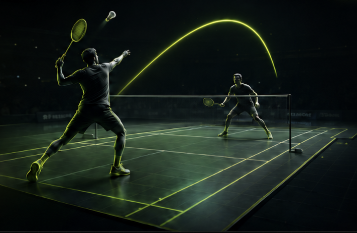

Video To Spatial Data
從影片，到可計算的 3D 賽場。
球員姿態、羽球軌跡、擊球位置，全部轉換成 AI 可讀的空間資料。
比賽影片 × 3D 重建
AI Commentary Voice
讓 AI 賽評被聽見。
TTS 將文字講評轉換成有節奏、有情緒、有臨場感的播報聲音；模型訓練導入愛爾達資深賽評盧正崇教授的專業語料。
盧正崇教授語料 × LLM 訓練 × AI commentary voiceAI 產生的賽評影片
Expert Knowledge Layer
讓 AI 不只會說， 而是真的懂球。
把專業球評語料與戰術知識整理成可檢索的內容，透過 RAG 注入 LLM，讓每一句賽評都有脈絡、有依據。
Expert RAG Pipeline
01 Expert Corpus
盧正崇教授語料
收斂資深賽評的站位、節奏、判斷與戰術語彙。
Commentary DNA
02 Retrieval Layer
RAG 知識層
比對當前回合的 3D 資料與相似戰術片段，找出最接近的專業講評脈絡。
Tactical Context
03 AI Output
專業賽評輸出
生成可直接進入轉播、TTS 或賽後分析的講評文本。
這波進攻透過連續的後場壓迫，成功創造出空檔機會。
Broadcast Ready
專業脈絡
源自專業語料，確保每句話都有依據。
戰術對齊
對齊回合資料與 3D 情境，提升講評精準度。
可直接播報
輸出結構化文本，無縫接入轉播與 TTS。
AI Sports Data Platform
打造下一代
AI 運動
數據平台。
從單場賽評出發，延伸到球員分析、戰術資料庫、訓練回饋與智慧轉播。
From one match to a self-improving sports intelligence loop.
System Status
AI Engine Running
Rally
104
FPS
60
Court
OK
MATCH DATA FLYWHEEL
Match
Intelligence
Core
Intelligence
Core
Capture
比賽影像輸入
雙攝影機取得賽事畫面。
Reconstruct
3D 賽事重建
產生骨架、球路與空間座標。
Understand
戰術語境理解
結合 RAG 與專家語料判讀回合。
Broadcast
AI 賽評播報
輸出文字講評與語音影片。
Improve
資料回饋訓練
累積球員、戰術與訓練洞察。